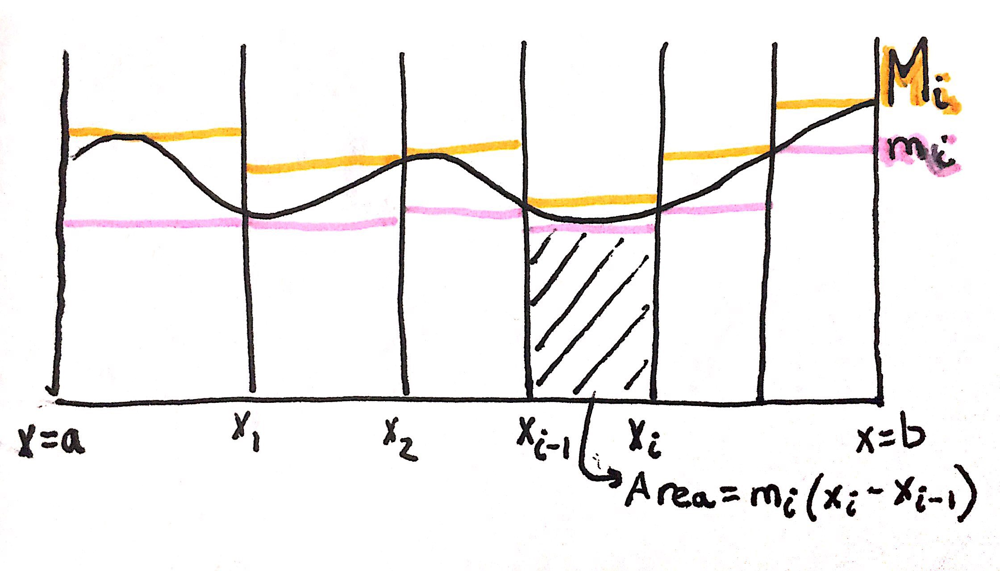
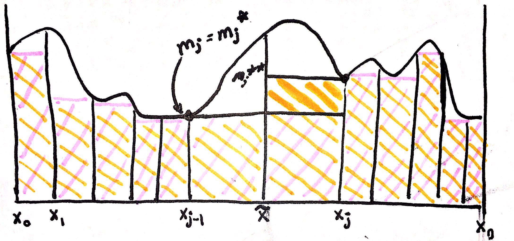

Chapter Summary~ Introducing partitions, lower sums, upper sums which will allow us to come up with a formal definition for integrals.
Def: a partition \(P\) of \([a,b]\) is a set of points \(a = x_0 < x_1 < x_2 < \ldots < x_n = b\)
Let \(f(x)\) be defined and bounded on \([a,b]\)
Def: \(m_i\) \(= \inf\left\{ f(x) \mid x_{i-1} < x < x_{i} \right\}\)
Def: \(M_i\) \(= \sup\left\{ f(x) \mid x_{i-1} < x < x_{i} \right\}\)
Def: \(L(f,P)\) \(= \sum_{i=1}^{n}m_{i}(x_{i}-x_{i-1})\)
The function \(L(f,P)\) stands for the lower sum of some function, \(f\), and partition, \(P\).
Def: \(U(f,P)\) \(= \sum_{i=1}^{n}M_{i}(x_{i}-x_{i-1})\)
The function \(U(f,P)\) stands for the upper sum of some function, \(f\), and partition, \(P\).
Image Explanation: Essentially partitions are the dividing lines along the x-axis of a graph. Every \(m_{i}\) is the pink line in the image, and the lowest value of \(f(x)\) for a specific partition of the graph. Whereas every \(M_{i}\) is the orange line in the image, and the highest value of \(f(x)\) for a specific partition of the graph. Thus \(L(f,P)\) is sum of the areas below the \(m_{i}\) lines, and \(U(f,P)\) is sum of the areas below the \(M_{i}\) lines.
Note that for every choice of \(L(f,P)\) and \(U(f,P)\), we want \(L(f,P) < area < U(f,P)\). Thus we need all the upper sums to be less than all the lower sums, but there are some extreme cases.
Extreme Case 1 ~ (when all lower sums = all upper sums)
$$\text{Let } f(x)=1 \text{ on } [17,103]$$
$$\text{Let } P \text{ be a partition of } [17,103]$$
$$L(f,P) = \sum_{i=1}^{n}(1)(x_{i}-x_{i-1})=x_{n}-x_{0}=86$$
$$U(f,P) = \sum_{i=1}^{n}(1)(x_{i}-x_{i-1})=x_{n}-x_{0}=86$$
$$L(f,P) = U(f,P)$$
Extreme Case 2 ~
$$\text{Let } f(x)= \begin{cases} 1 & x= \mathbb{Q} \\ 0 & x \neq \mathbb{Q} \end{cases} \text{ on } [12,103]$$
$$\implies M_{i}=1 \land m_{i} = 0$$
$$L(f,P) = \sum_{i=1}^{n}(0)(x_{i}-x_{i-1})=0$$
$$U(f,P) = \sum_{i=1}^{n}(1)(x_{i}-x_{i-1})=x_{n}-x_{0}=86$$
$$L(f,P) \neq U(f,P)$$
In order to have a reasonable candidate for area, area should be unique, and that is why we want \(\inf(U)=\sup(L)\), thus Extreme Case 2 fails.
Def: Let \(P\) and \(Q\) be partitions with \(P\subset Q\), then Q is said to be finer than \(P\)
Def: Let \(P\) and \(Q\) be partitions with \(P\subset Q\), then P is said to be coarser than \(Q\)
Think about how rocks are more coarse than sand, and sand is more fine. Since \(P\subset Q\), \(P\) has larger chunks of area versus \(Q\), so \(P\) is like the large coarse rocks (with more empty space inbetween) versus \(Q\), the fine sand.
Theorem: Let \(f\) be bounded on \([a,b]\) and let \(P\), \(Q\) be two partitions of \([a,b]\) s.t. \(P \subset Q\), then \(L(f,P) \leq U(f,Q)\)
Theorem Proof:
Lemma: If \(P \subset Q\) then \((L(f,P) \leq L(f,Q))\land(U(f,P)\geq U(f,Q))\)
Lemma Proof: $$\text{Consider the special case where } Q \text{ contains one more point, }\tilde{x} \text{, than } P$$ 
Image Explanation: The pink area represents \(L(f,P)\), and orange area represents \(L(f,Q)\). After adding an extra point, \(\tilde{x}\), it is clear that there should be more area overall (i.e. the bolded orange part of image). The value of \(L(f,Q)\) can be obtained by adding the areas for 4 parts, \(x_{0} \to x_{j-2}\), \(x_{j-1} \to \tilde{x}\), \(\tilde{x} \to x_{j}\) and \(x_{j+1} \to x_{n}\).
$$\text{Suppose } P=\left\{x_{0},\ldots,x_{n}\right\}$$ $$\text{Suppose } Q=\left\{x_{0},\ldots,x_{j-1},\tilde{x},x_{j},\ldots,x_{n}\right\}$$ $$\text{where } a = x_{0} < x_{1} < \ldots < x_{j-1} < \tilde{x} < x_{j} < \ldots < x_{n} = b$$ $$\text{Let } m_{j} = \inf\left\{f(x)\mid x_{j-1} \leq x \leq x_{j}\right\}$$ $$\text{Let } m_{j}^{*} = \inf\left\{f(x)\mid x_{j-1} \leq x \leq \tilde{x} \right\}$$ $$\text{Let } m_{j}^{**} = \inf\left\{f(x)\mid \tilde{x} \leq x \leq x_{j}\right\}$$ $$L(f,P) = \sum_{i=1}^{n}m_{i}(x_{i}-x_{i-1})$$ $$L(f,Q) = \sum_{i=1}^{j-1}m_{i}(x_{i}-x_{i-1})+m_j^{*}(\tilde{x}-x_{j-1})+m_j^{**}(x_{j}-\tilde{x})+\sum_{i=j+1}^{n}m_{i}(x_{i}-x_{i-1})$$ $$\text{Let } T = \sum_{i=1}^{j-1}m_{i}(x_{i}-x_{i-1})+\sum_{i=j+1}^{n}m_{i}(x_{i}-x_{i-1})$$ $$L(f,P) = T+m_j(x_{j}-x_{j-1})=T+m_j(\tilde{x}-x_{j-1})+m_j(x_{j}-\tilde{x})$$ $$L(f,Q) = T + m_j^{*}(\tilde{x}-x_{j-1})+m_j^{**}(x_{j}-\tilde{x})$$ $$m_{j}^{*} \geq m_{j} \implies m_{j}^{*}(\tilde{x}-x_{j-1}) \geq m_{j}(\tilde{x}-x_{j-1})$$ $$m_{j}^{**} \geq m_{j} \implies m_{j}^{**}(x_{j}-\tilde{x}) \geq m_{j}(x_{j}-\tilde{x})$$ $$\implies m_{j}^{*}(\tilde{x}-x_{j-1}) + m_{j}^{**}(x_{j}-\tilde{x}) \geq m_{j}(\tilde{x}-x_{j-1}) + m_{j}(x_{j}-\tilde{x})$$ $$\implies T + m_{j}^{*}(\tilde{x}-x_{j-1}) + m_{j}^{**}(x_{j}-\tilde{x}) \geq T + m_{j}(\tilde{x}-x_{j-1}) + m_{j}(x_{j}-\tilde{x})$$ $$\implies L(f,Q) \geq L(f,P)$$ $$\text{By a similar proof } U(f,P)\geq U(f,Q) \text{ is true}$$ $$\text{This proves for the special case where Q contains one more point than P, }$$ $$\text{for the general case, Q can be obtained by adding one point at a time to P}$$ $$P = P_{1},P_{1},\ldots,P_{\alpha}=Q \text{ s.t. } P_{j+1} \text{ contains one more point than } P_{j}$$ $$\implies L(f,P)=L(f,P_{1}) \leq L(f,P_{2}) \leq \ldots \leq L(f,P_{\alpha}) = L(f,Q)$$ $$\implies U(f,P)=U(f,P_{1}) \geq U(f,P_{2}) \geq \ldots \geq U(f,P_{\alpha}) = U(f,Q)$$Lemma Proof Summary:
Theorem Proof Continued:
$$L(f,P) \leq L(f,P\cup Q)$$ $$L(f,P\cup Q) \leq U(f,P\cup Q)$$ $$U(f,P\cup Q) \leq U(f,Q) $$ $$\implies L(f,P) \leq U(f,Q)$$Chapter Summary~ define integrals using upper and lower sums; \(\epsilon\) definition allows us to restate integral definition without sups and infs which are hard to work with;
Def: Let \(f\) be bounded on \([a,b]\) then \(f\) is integrable on \([a,b]\) if \(\sup\left\{L(f,P)\mid P \subset [a,b]\right\}=\inf\left\{U(f,P)\mid P \subset [a,b]\right\}\)
Def: The integral of \(f\) on \([a,b]\) is equal to \(\sup\left\{L(f,P)\mid P \subset [a,b]\right\}=\inf\left\{U(f,P)\mid P \subset [a,b]\right\}\), and will temporarily be written as \(\int_{a}^{b}f\)
The set \(\left\{L(f,P)\mid P \subset [a,b]\right\}\) is essentially all possible values of lower sums for all possible partitions on \([a,b]\), including the partition where the x values are so close together that the lower sums value is equal to the area under the graph. This definition connects integrals closely with area under the graph of a function.
Theorem: If \(f\) is bounded on \([a,b]\), then \(f\) is integrable on \([a,b] \iff \forall \epsilon > 0\text{, } \exists\ P\subset [a,b] \text{ s.t. } U(f,P)-L(f,P) < \epsilon\)
Theorem Proof: $$\text{Assume } \forall \epsilon > 0\text{, } \exists\ P\subset [a,b] \text{ s.t. } U(f,P)-L(f,P) < \epsilon $$ $$\text{By definition } \sup\left\{L(f,P)\mid P \subset [a,b]\right\} \geq L(f,P)$$ $$\inf\left\{U(f,P)\mid P \subset [a,b]\right\} \leq U(f,P)$$ $$U(f,P)-L(f,P) < \epsilon \implies \inf\left\{U(f,P)\mid P \subset [a,b]\right\} - \sup\left\{L(f,P)\mid P \subset [a,b]\right\} < \epsilon$$ $$\implies \inf\left\{U(f,P)\mid P \subset [a,b]\right\} = \sup\left\{L(f,P)\mid P \subset [a,b]\right\} $$ $$\implies f \text{ is integrable}$$ $$\text{Assume } f \text{ is integrable} $$ $$\implies\sup\left\{L(f,P)\mid P \subset [a,b]\right\}=\inf\left\{U(f,P)\mid P \subset [a,b]\right\}$$ $$\implies\forall\epsilon > 0, \exists\ P',P'' \text{ s.t. } U(f,P'') - L(f,P') < \epsilon $$ $$\text{Let } P' \subset P \land P'' \subset P$$ $$\implies U(f,P)\leq U(f,P'') $$ $$\implies L(f,P)\geq L(f,P')$$ $$\implies U(f,P)-L(f,P)\leq U(f,P'')-L(f,P') < \epsilon $$
Theorem Proof Summary:
Theorem: If \(f\) is monotonic on \([a,b]\), then \(f\) is integrable on \([a,b]\)
Theorem Proof: $$\text{Assume } f \text{ is increasing}$$ $$\text{Let } n \in \mathbb{Z}^{+}$$ $$\text{Let } P_{n} \text{ be an evenly spaced partition with } a = x_{0},x_{1},x_{2},\ldots,x_{n}=b $$ $$\text{For a given interval } [x_{i-1},x_{i}], x_{i}-x_{i-1}=\frac{b-a}{n} $$ $$\implies m_{i} = \inf\left\{ f(x) \mid x_{i-1} < x < x_{i} \right\} = f(x_{i-1})$$ $$\implies M_{i} = \sup\left\{ f(x) \mid x_{i-1} < x < x_{i} \right\} = f(x_{i}) $$ $$L(f,P_{n})= \sum_{i=1}^{n}m_{i}(x_{i}-x_{i-1})=\sum_{i=1}^{n}f(x_{i-1})(\frac{b-a}{n})$$ $$U(f,P_{n})= \sum_{i=1}^{n}M_{i}(x_{i}-x_{i-1})=\sum_{i=1}^{n}f(x_{i})(\frac{b-a}{n})$$ $$\implies U(f,P_{n})-L(f,P_{n})=\sum_{i=1}^{n}f(x_{i})(\frac{b-a}{n})-\sum_{i=1}^{n}f(x_{i-1})(\frac{b-a}{n})=(f(x_{n})-f(x_{0}))(\frac{b-a}{n}) $$ $$\text{We want } U(f,P_{n})-L(f,P_{n}) = \frac{(f(x_{n})-f(x_{0}))(b-a)}{n} < \epsilon$$ $$\text{Choose an } n \text{ that is large enough so } \frac{(f(x_{n})-f(x_{0}))(b-a)}{n} < \epsilon \text{, WAD}$$ $$\text{By a similar proof we can show this is true when } f \text{ is decreasing}$$
Theorem Proof Summary:
Note that the notation for integral defined earlier was \(\int_{a}^{b}f\), but this notation suffers from lack of convenient way to name functions defined by formulas. Therefore the new notation will be \(\int_{a}^{b}f(x) dx\). Notice that the symbol \(x\) within the notation can be replaced by any other letter so \(\int_{a}^{b}f(x) dx = \int_{a}^{b}f(t) dt = \int_{a}^{b}f(\alpha) d\alpha = \ldots\)
Theorem: Suppose \(f(x)\) is increasing and \(\lim_{x\to \infty}f(x)=L\) then \(\sup\left\{ f(x) \mid x \in \mathbb{R} \right\}=L\)
Let \(f(x)\) be increasing, and let \(n\in \mathbb{Z}^{+}\), and \(0=x_{0} < x_{1} < x_{2} < \ldots < x_{n} = b\) be a partition, \(P_{n}\), with equally spaced intervals. Write an expression for \(L(f,P_{n})\).
$$L(f,P_{n})= \sum_{i=1}^{n}m_{i}(x_{i}-x_{i-1})$$
$$f(x) \text{ is increasing } \implies m_i = \inf\left\{ f(x) \mid x_{i-1} < x < x_{i} \right\}=f(x_{i-1})$$
$$\implies L(f,P_{n})= \sum_{i=1}^{n}f(x_{i-1})(x_{i}-x_{i-1})$$
$$P_{n} \text{ is evenly spaced } \implies x_{i}-x_{i-1}=\frac{b-0}{n}=\frac{b}{n}$$
$$\implies L(f,P_{n})= \sum_{i=1}^{n}f(x_{i-1})\frac{b}{n}=\frac{b}{n}\sum_{i=1}^{n}f(x_{i-1})$$
$$(0=x_{0} < x_{1} < x_{2} < \ldots < x_{n} = b) \implies x_{i-1}=(i-1)\frac{b}{n}$$
$$\implies L(f,P_{n})= \frac{b}{n}\sum_{i=1}^{n}f\left((i-1)\frac{b}{n}\right)$$
By a similar method, we can find \(U(f,P_{n})\).
$$U(f,P_{n})= \sum_{i=1}^{n}M_{i}(x_{i}-x_{i-1})=\frac{b}{n}\sum_{i=1}^{n}M_{i}=\frac{b}{n}\sum_{i=1}^{n}f(x_{i})=\frac{b}{n}\sum_{i=1}^{n}f\left((i)\frac{b}{n}\right)$$
We already know that \(\int_{0}^{b}1 dx= b\). Utilizing the formulas above, calculate \(\int_{0}^{b}x dx\), given that \(b > 0\).
$$L(f,P_{n})=\frac{b}{n}\sum_{i=1}^{n}f\left((i-1)\frac{b}{n}\right)=\frac{b^{2}}{n^{2}}(0+1+2+\ldots+(n-1))$$
$$=\frac{b^{2}}{n^{2}}\left(\frac{n(n-1)}{2}\right)=\frac{b^{2}}{2}\left(1-\frac{1}{n}\right)$$
$$\text{By previous theorem, we know } \sup\left\{ f(x) \mid x \in \mathbb{R} \right\}=L=\lim_{x\to \infty}f(x)$$
$$\implies \sup\left\{L(f,P_{n})\right\}=\lim_{x\to \infty}\frac{b^{2}}{2}\left(1-\frac{1}{n}\right)=\frac{b^{2}}{2}$$
$$\text{Similarly } U(f,P_{n})= \frac{b}{n}\sum_{i=1}^{n}f\left((i)\frac{b}{n}\right)=\frac{b^{2}}{n^{2}}(1+2+\ldots+n)$$
$$=\frac{b^{2}}{n^{2}}\left(\frac{n(n+1)}{2}\right)=\frac{b^{2}}{2}\left(1+\frac{1}{n}\right)$$
$$\implies \inf\left\{U(f,P_{n})\right\}=\lim_{x\to \infty}\frac{b^{2}}{2}\left(1+\frac{1}{n}\right)=\frac{b^{2}}{2}$$
$$\implies \int_{0}^{b}x dx = \sup\left\{L(f,P_{n})\right\} = \inf\left\{U(f,P_{n})\right\} = \frac{b^{2}}{2}$$
Now if we follow the same steps, we will find that \(\int_{0}^{b}x^{2} dx=\frac{b^{3}}{3}\). And from this we realize \(\int_{0}^{b}x^{n} dx=\frac{b^{n+1}}{n+1}\).
Def: mesh is the size of the greatest subinterval of a given partition
Theorem: If \(f\) is continuous on \([a,b]\), then \(f\) is integrable on \([a,b]\)
Theorem Proof: $$f \text{ is continuous } \implies f \text{ is uniformly continuous } $$ $$\implies \forall\ \epsilon > 0, \exists\ \delta > 0 \text{ s.t. } \forall\ x,y \in [a,b], \left|x-y\right| < \delta \implies \left|f(x)-f(y)\right| < \frac{\epsilon}{2(b-a)}$$ $$\text{Let } P \text{ be a partition } =\left\{x_{0},\ldots,x_{n}\right\}, \text{ s.t. } \forall\ x_{i},x_{i-1} \in P, \left|x_{i}-x_{i-1}\right| < \delta$$ $$\text{Which is the same as letting } P \text{ be a partition with mesh } < \delta$$ $$\implies \forall\ \epsilon > 0, \exists\ \delta > 0 \text{ s.t. } \forall x,y \in [x_{i-1},x_{i}], \left|x-y\right| < \delta$$ $$\implies \forall x,y \in [x_{i-1},x_{i}], \left|f(x)-f(y)\right| < \frac{\epsilon}{2(b-a)}$$ $$\implies M_{i} - m_{i} \leq \frac{\epsilon}{2(b-a)} < \frac{\epsilon}{b-a} $$ $$U(f,P)-L(f,P) = \sum_{i=1}^{n}(M_{i}-m_{i})(x_{i}-x_{i-1}) < \frac{\epsilon}{b-a}\sum_{i=1}^{n}(x_{i}-x_{i-1})=\frac{\epsilon}{b-a}(b-a)=\epsilon$$ $$\implies U(f,P)-L(f,P) < \epsilon$$ $$\implies f \text{ is integrable } on [a,b]$$
Theorem Proof Summary:
Theorem: Let \(a < c < b\). If \(f\) is integrable on \([a,b]\), then \(f\) is integrable on \([a,c]\) and \([c,b]\). Conversely, if \(f\) is integrable on \([a,c]\) and \([c,b]\), then \(f\) is integrable on \([a,b]\). Finally if \(f\) is integrable on \([a,b]\), then \(\int_{a}^{b}f =\int_{a}^{c}f + \int_{c}^{b}f\).
Theorem Proof: $$\text{located in textbook pg 267, in notes pg 1}$$
Earlier the integral \(\int_{a}^{b}f\) was only defined for \(a < b\), but due to previous theorem we have some minor notational conventions.
Def: \(\int_{a}^{a}f=0\)
Def: \(\int_{a}^{b}f=-\int_{b}^{a}f\) if \(a > b\)
From this, \(\int_{a}^{b}f =\int_{a}^{c}f + \int_{c}^{b}f\) holds for all \(a,c,b\) even if \(a < c < b\) is not true. This makes the computation of integrals easier.
$$\int_{2}^{5}x^2 dx =\int_{0}^{5}x^2 dx + \int_{2}^{0}x^2 dx = \int_{0}^{5}x^2 dx - \int_{0}^{2}x^2 dx = \frac{5^{3}}{3} - \frac{2^{3}}{3}=39$$
Theorem: If \(f\) and \(g\) are integrable on \([a,b]\), then \(f+g\) is integrable on \([a,b]\) and \(\int_{a}^{b}(f + g)=\int_{a}^{b}f + \int_{a}^{b}g\)
Theorem: If \(f\) is integrable on \([a,b]\), then for any number \(c\), the function \(cf\) is integrable on \([a,b]\) and \(\int_{a}^{b}cf = c\int_{a}^{b}f\)
Theorem: \(\int_{a}^{b}f(x) dx = \int_{a+r}^{b+r}f(x-r) dx\)
Theorem: \(\int_{a}^{b}f(x) dx = \frac{1}{k}\int_{ak}^{bk}f(\frac{x}{k}) dx\)
Theorem: If \(f\) is even, then \(\int_{-a}^{a}f(x) dx = 2\int_{0}^{a}f(x) dx\). If \(f\) is odd, then \(\int_{-a}^{a}f(x) dx = 0\)
Theorem Proof Summary:
Theorem: Suppose \(f\) is integrable on \([a,b]\) and that \(\forall\ x \in [a,b], m \leq f(x) \leq M\), then \(m(b-a) \leq \int_{a}^{b}f \leq M(b-a)\).
Theorem: If \(f\) is integrable on \([a,b]\) and \(F\) is defined on \([a,b]\) by \(F(x)=\int_{a}^{x}f\), then \(F\) is continuous on \([a,b]\).
Theorem Proof: $$\text{in textbook on pg 270, in notes on pg 2.5-3}$$
Now a motivating example for the fundamental theorem of calculus. (Refer to notes pg 3).
The First Fundamental Theorem of Calculus: Let \(f\) be integrable on \([a,b]\) and define \(F\) on \([a,b]\) by \(F(x)=\int_{a}^{x}f\). If \(f\) is continuous at \(c \in [a,b]\), then \(F\) is diffrentiable at \(c\) and \(F'(c) = f(c)\). (If \(c=a\) or \(b\), then \(F'(c)\) is understodd to mean the right- or left-hand derivative of \(F\))
The Second Fundamental Theorem of Calculus: If \(f\) is integrable on \([a,b]\) and \(f = g'\) for some function \(g\), then \(\int_{a}^{b}f = g(b)-g(a)\)
Def: Anything whose derivative is \(f\), the class next door will call antiderivative, and we will call a primative (any two primitives defer by a constant). Thus if \(g\) is a primative for \(f\), we can write \(\int_{a}^{b}f(t) dt = g(t)\big|_{a}^{b}=g(b)-g(a)\).
Application~
Be careful and remember that \(\frac{d}{dx}(\sin x) = \cos x\) and \(\frac{d}{dx}(\cos x) = -\sin x\)
$$\int_{-1}^{2}3x^{2} dx = x^{3}\big|_{-1}^{2} = 2^{3}-(-1)^{3} = 9$$
$$\int_{0}^{\pi}\cos x dx = \sin x \big|_{0}^{\pi}=\sin \pi - \sin 0 = 0$$
$$\int_{0}^{\pi}\sin x dx = -\cos x \big|_{0}^{\pi}= (-\cos \pi) - (-\cos 0) = 2$$
The above are all definite integrals as they yield numerical solutions, whereas indefinite integrals give many functions such as
$$\int x^{n} dx = \frac{x^{n+1}}{n+1} + C,\ \forall\ n \neq -1 \land n \in \mathbb{Q}$$
Also suppose \(0 < f(x) \leq g(x)\) on \([a,b]\) and both are integrable, then the area between the graphs of \(y=f(x)\) and \(y = g(x)\) between \(x=a\) and \(x=b\) is
$$\int_{a}^{b}g(x) dx - \int_{a}^{b}f(x) dx = \int_{a}^{b}(g(x)-f(x)) dx$$